News
News
| Getting Started | Documentation | Glish | Learn More | Programming | Contact Us |
|
| VERSIONID |
News
|
variational method
vector graphics
velocity
vernal equinox
viewer
view of data
virtual memory
virtual table
visibility function
VisSet
visualization
VLA
VLBA
VLBI
voxel
The name which applies to Tim Cornwell's original AIPS realization of the Maximum Entropy Method, to solve the image deconvolution problem g = b * f, where g and b are given, and f is unknown. The regularizing term S(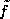) (see regularization method), a function of the computed approximate solution , is given by the negative of an entropy expression, of the form
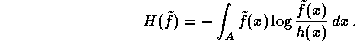
Here A denotes the (assumed known) support of
f, and h is a prior estimate of f;
when h  constant, this agrees with
the standard formulation of the Maximum Entropy Method. A weighted
sum 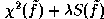 of a 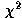 error term and
S is minimized, and the regularization parameter 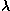 is chosen so that the
r.m.s. residual corresponding to the final iterate is approximately
equal to an input value. For optical data the term is taken as ||g - b* ||², whereas for
radio data the term is evaluated in
the visibility domain, where the measurement errors may more properly
be assumed to be statistically independent. The minimization is done
using a Newton-type method, with a diagonal approximation to the
Hessian of the objective function and intricate control of the
steplength. In terms of execution speed, this method is faster than
the Clark CLEAN algorithm for large
objects of complex structure, and usually gives superior results for
such objects. See T. J. Cornwell, Deconvolution with a maximum
entropy type algorithm, VLA Scientific Memo. No. 149.
constant, this agrees with
the standard formulation of the Maximum Entropy Method. A weighted
sum 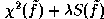 of a 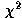 error term and
S is minimized, and the regularization parameter 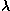 is chosen so that the
r.m.s. residual corresponding to the final iterate is approximately
equal to an input value. For optical data the term is taken as ||g - b* ||², whereas for
radio data the term is evaluated in
the visibility domain, where the measurement errors may more properly
be assumed to be statistically independent. The minimization is done
using a Newton-type method, with a diagonal approximation to the
Hessian of the objective function and intricate control of the
steplength. In terms of execution speed, this method is faster than
the Clark CLEAN algorithm for large
objects of complex structure, and usually gives superior results for
such objects. See T. J. Cornwell, Deconvolution with a maximum
entropy type algorithm, VLA Scientific Memo. No. 149.
An approach to graphics which which deals with separate shapes such as lines, polygons and text and groups of such objects as opposed to a raster graphics program which produces bitmaps. The advantage is that it is possible to change any element of the picture at any time since each part is stored as an independent object, whereas once data in a bitmap have been overwritten they cannot in general be retrieved.
The general relation between the radial velocity , the emitted frequency  , and the observed frequency
, and the observed frequency  is given by the
relativistic expression for the Doppler
correction:
is given by the
relativistic expression for the Doppler
correction:
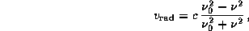
where c is the velocity of light. Unfortunately, not only does astronomical tradition approximate this expression, but two different ``velocity" definitions are in common use---a radio and an optical definition.
The radio velocity definition approximates << c, i.e.
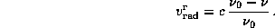
Here the superscript r connotes the radio definition. This definition is used primarily by astronomers doing galactic radio astronomy.
To obtain the optical velocity definition, the general relation is
first converted to its wavelength-based equivalent by substituting
= c/, etc., then again approximating << c. Thus we obtain
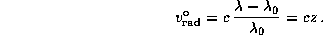
Here the superscript o connotes the optical
definition. and denote the rest
wavelength of the emitted line and the observing wavelength,
respectively, and z is the redshift. This definition is
commonly used in extragalactic radio astronomy. The optical velocity
definition in terms of frequency is
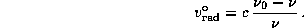
Because both the radio and the optical definitions are approximations, the ``velocities" derived using these definitions have no physical meaning unless is indeed much smaller than c.
Great care is needed to distinguish these two velocity definitions. The velocities derived from them are notinterchangeable in practical cases. For example, when studying neutral hydrogen at a moderate redshift, supplying the optical velocity of a galaxy to software that assumes the radio definition can easily shift the emission out of the observing bandwidth. (This happened to now-famous astronomers both at the WSRT and at the VLA in the early days.)
The point of intersection between the ecliptic and the celestial equator, where the Sun crosses from south to north. By definition, the zero point of right ascension. Known as the First Point of Aries, it is now in the constellation Pisces, due to precession of the equinoxes.
Also, the time (near March 21) at which the Sun makes its northward crossing of the celestial equator. Currently migrating toward March 19, due to precession.
A tool for visualizing data of various types, built using the Display Library.
occurs in AIPS++ when an object has no data of its own but references data in an underlying object. Modifying data through the view also modifies it in the underlying object.
A C++ example of this is matrix.diagonal() = 1;. The result of the diagonal() member function is to return a Vector which is a view of a portion of the underlying Matrix (its diagonal). This view object is set to unity, which changes the underlying Matrix.
The address space available to a process running in a system with a memory management unit (MMU). The virtual address space is usually divided into pages of 2 bytes. The bottom n address bits (the offset within a page) are left unchanged and the upper bits give a (virtual) page number which is mapped by the memory management unit to a physical page number. Virtual memory is usually much larger than physical memory. Paging allows the excess to be stored on disk and copied to RAM as needed, so that programs can be run whose memory requirements for code and data together exceed the amount of RAM available. Performance depends strongly on how a program's memory access pattern interacts with the paging scheme.
In AIPS++, a Table (or column) in which some of the data are computed (or come from some other source) is known as a virtual table (or virtual column).
In radio interferometry, a complex-valued un-normalized measure of the coherence function of the arriving radiation, modified by the characteristics of the interferometer's antennas. The function V(u,v) of position in the u-v plane approximates the Fourier transform of the sky brightness distribution multiplied by the average primary beam pattern of the antennas. This approximation, valid in the limit of small fields of view, is the basis of image formation by aperture synthesis. A correlating-type radio interferometer is an instrument for sampling local averages of the visibility function.
A view of data for interferometric data that presents a sufficient interface for imaging applications. For example, it would have time, anntennas, pointing centers, weights and the actual visibilities. A VisSet is normally attached to a MeasurementSet.
Any procedure that visually presents numerical data, but particularly a graphical one. Visualization may be used to describe any visual data display, from a simple graph of one dependent variable against one independent variable to a "virtual reality" program that allows a user to fly around a representation of data.
Very Large Array. A 27-antenna interferometer array operated by the National Radio Astronomy Observatory on the Plains of San Agustin near Socorro, New Mexico. The VLA uses Earth-rotation aperture synthesis over baselines of tens of kilometers to obtain high angular resolution at centimeter wavelengths.
Very Long Baseline Array. A 10-antenna interferometer array operated by the National Radio Astronomy Observatory from Socorro, New Mexico, with antenna elements in San Croix, New Hampshire, Iowa, Texas, New Mexico(2), Arizona, California, Washington and Hawaii. The VLBA uses the VLBI technique over baseline lengths of thousands of kilometers to obtain very high angular resolution at centimeter wavelengths.
Very Long Baseline Interferometry. A radio astronomical technique whereby the signals received by two or more antennas from the same celestial source are recorded on magnetic tapes with timing information. The tapes are later brought together for synchronized playback into a correlator. This technique allows antennas separated by hundreds of kilometers, or much more, to be used together as an interferometer or as an array for Earth-rotation aperture synthesis.
(By analogy with "pixel"): Volume element. The smallest distinguishable box-shaped element of a three-dimensional space. A particular voxel will be identified by the x, y and z coordinates of one of its eight corners, or perhaps its center. The term is used in three dimensional modelling and in the discussion of data cubes.
You could now go back to the:
Copyright © 1995,1996,1999,2000 Associated Universities Inc., Washington, D.C.
abridle@nrao.edu, 27 August 1996, 16:23 EDT